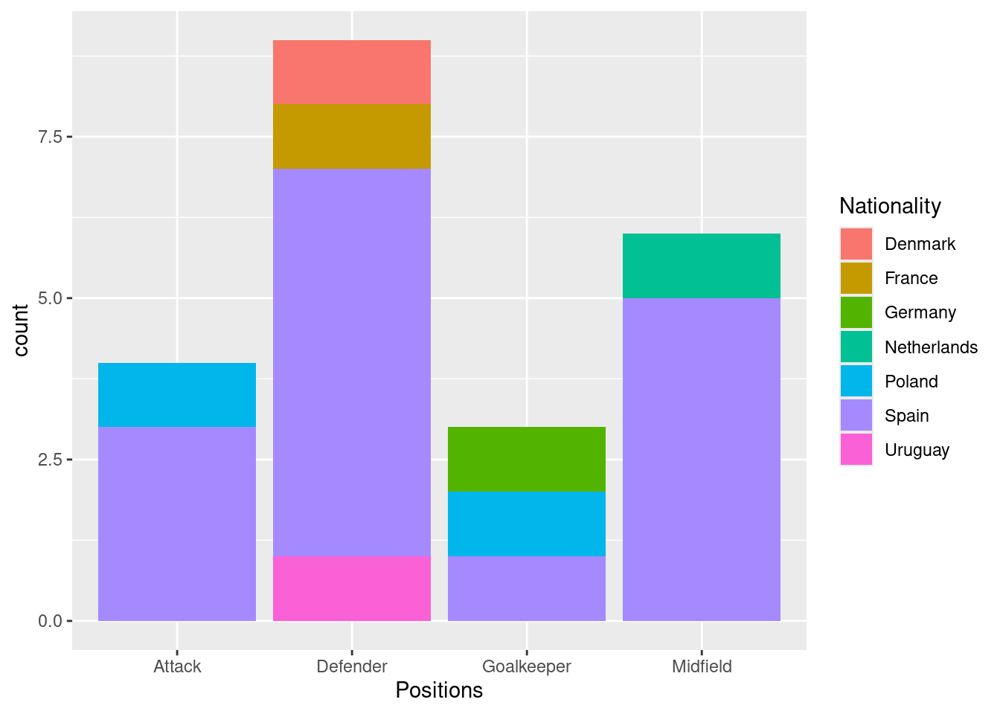
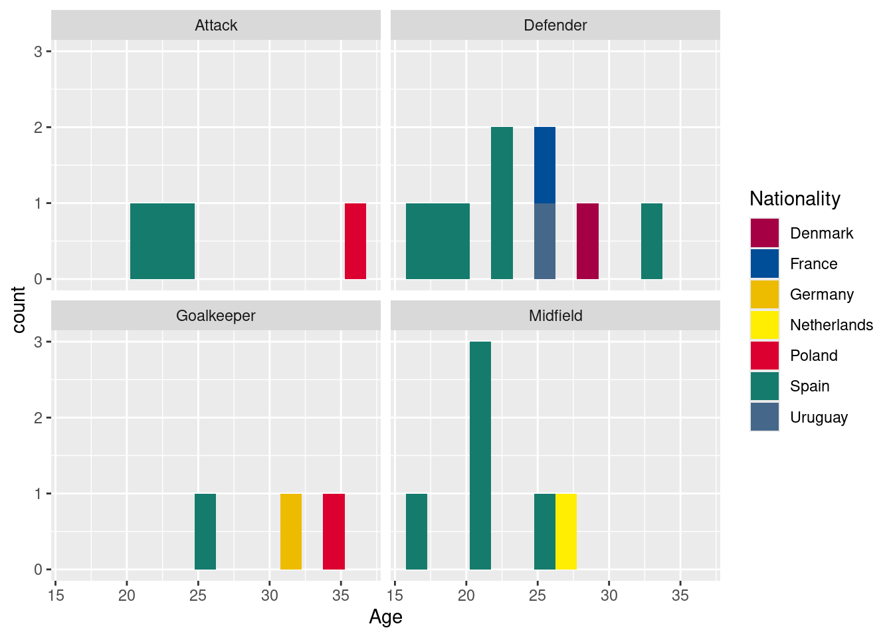

library(dplyr)
Attaching package: 'dplyr'The following objects are masked from 'package:stats':
filter, lagThe following objects are masked from 'package:base':
intersect, setdiff, setequal, union#|eval: FalseAdriel Wijaya
July 1, 2025
FC Barcelona (Futbol Club Barcelona ) is a football club founded in 1899 by a group of Swiss, Catalan, German, and English footballers led by Joan Gamper[@fcbarce2025]. The club motto “Més que un club” meaning “More than a club”[@fcbarce2025].
Table below shows football player that plays for FC Barcelona.
Attaching package: 'dplyr'The following objects are masked from 'package:stats':
filter, lagThe following objects are masked from 'package:base':
intersect, setdiff, setequal, union| Name | Birth Date | Height | Positions | Nationality | Age |
|---|---|---|---|---|---|
| Robert Lewandowski | 1988-08-21 | 185 | Attack | Poland | 36 |
| Wojciech Szczęsny | 1990-04-18 | 196 | Goalkeeper | Poland | 34 |
| Marc-André ter Stegen | 1992-04-30 | 187 | Goalkeeper | Germany | 32 |
| Iñigo Martínez | 1991-05-17 | 182 | Defender | Spain | 33 |
| Andreas Christensen | 1996-04-10 | 187 | Defender | Denmark | 28 |
| Iñaki Peña | 1999-03-02 | 184 | Goalkeeper | Spain | 25 |
| Dani Olmo | 1998-05-07 | 179 | Midfield | Spain | 26 |
| Frenkie de Jong | 1997-05-12 | 181 | Midfield | Netherlands | 27 |
| Ferran Torres | 2000-02-29 | 184 | Attack | Spain | 24 |
| Jules Koundé | 1998-11-12 | 180 | Defender | France | 25 |
| Eric García | 2001-01-09 | 182 | Defender | Spain | 23 |
| Ansu Fati | 2002-10-31 | 178 | Attack | Spain | 21 |
| Ronald Araujo | 1999-03-07 | 192 | Defender | Uruguay | 25 |
| Alejandro Balde | 2003-10-18 | 175 | Defender | Spain | 20 |
| Marc Casadó | 2003-09-14 | 172 | Midfield | Spain | 21 |
| Fermín López | 2003-05-11 | 174 | Midfield | Spain | 21 |
| Gerard Martín | 2002-02-26 | 186 | Defender | Spain | 22 |
| Pau Víctor | 2001-11-26 | 184 | Attack | Spain | 22 |
| Pablo Torre | 2003-04-03 | 173 | Midfield | Spain | 21 |
| Héctor Fort | 2006-08-02 | 185 | Defender | Spain | 18 |
| Pau Cubarsí | 2007-01-22 | 184 | Defender | Spain | 17 |
| Marc Bernal | 2007-05-26 | 191 | Midfield | Spain | 17 |
Table.1 FC Barcelona Player Season 2023-2024
FC Barcelona’s success is contributed by it’s youth football academy called La Masia (The Farmhouse). It is considered as the best youth system in world football. It can be seen in the figure below that the majority of FC Barcelona players from Spain.

This is further shown in the figure below where for every position (except Goalkeeper) FC Barcelona has a young player (age below 25) coming from La Masia.

The success of FC Barcelona in the footballing world shows the importance of developing young talent through club academy. This not only beneficial for the club but also the player.